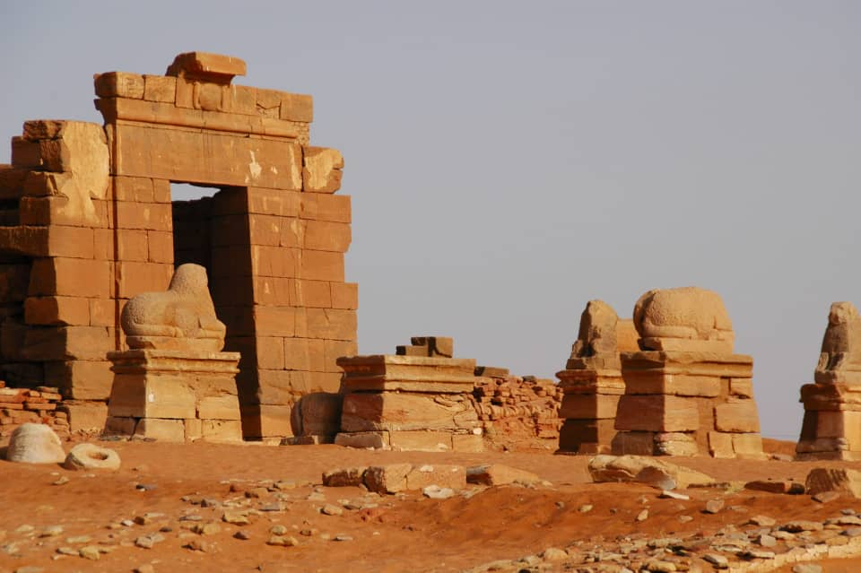
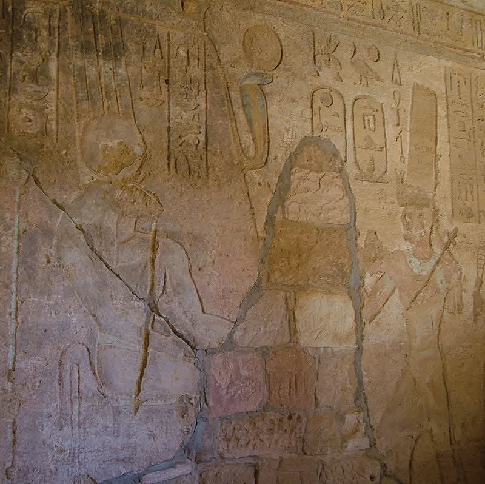
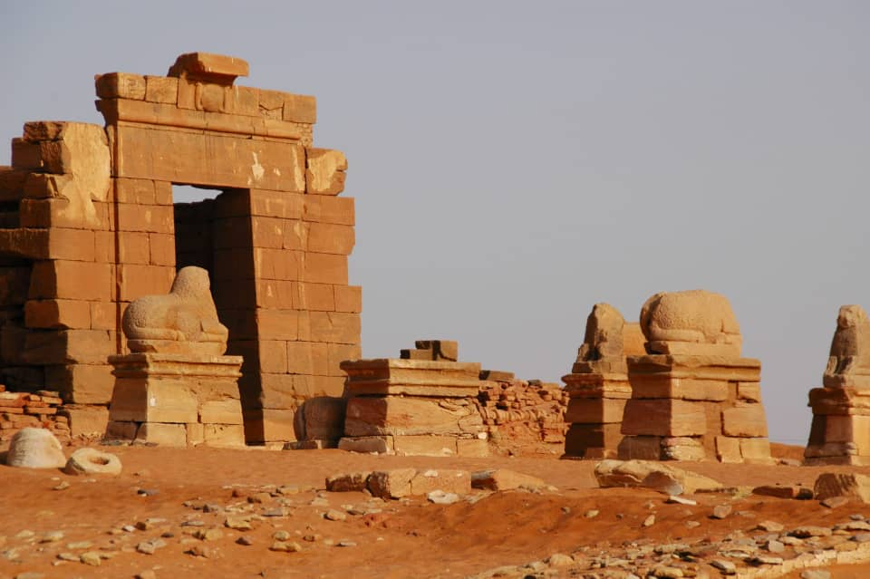
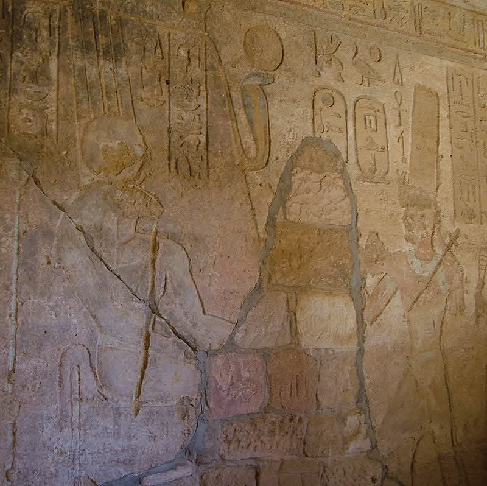

Tourism
The Temple of Amun at Jebel Barkal is one of the most significant archaeological and tourist attractions in Sudan’s Northern State.
It attracts visitors from around the world eager to explore the history of the Kushite Kingdom and ancient Egyptian civilization.
The temple’s unique architectural blend of Egyptian and Nubian styles
makes it a distinctive destination for history and culture enthusiasts.
The Temple of Amun at Jebel Barkal is one of the most significant archaeological and tourist attractions in Sudan’s Northern State.
It attracts visitors from around the world eager to explore the history of the Kushite Kingdom and ancient Egyptian civilization.
The temple’s unique architectural blend of Egyptian and Nubian styles
makes it a distinctive destination for history and culture enthusiasts.
Location
The Temple of Amun is located 400
kilometers north of Khartoum, near the city of Karima in Sudan’s Northern State.
It is nestled beside Jebel Barkal, a historical and religious landmark,
adding to the strategic and cultural significance of its location.
The Temple of Amun is located 400
kilometers north of Khartoum, near the city of Karima in Sudan’s Northern State.
It is nestled beside Jebel Barkal, a historical and religious landmark,
adding to the strategic and cultural significance of its location.
Historical Significance
Built in the 13th century BCE, the temple is believed to have been
established during the reign of Thutmose III and completed under Ramses II.
It played a vital role in the Kushite Kingdom
and was later expanded by the Nubian king Piye (Piankhi) and other Nubian pharaohs.
The temple suffered destruction by the Romans during Gaius Petronius' campaign (25/24 BCE)
but was restored and expanded by the Kushite King Natakamani.
Serving as a religious center for both Egyptians and Nubians,
it holds immense historical importance.
Built in the 13th century BCE, the temple is believed to have been
established during the reign of Thutmose III and completed under Ramses II.
It played a vital role in the Kushite Kingdom
and was later expanded by the Nubian king Piye (Piankhi) and other Nubian pharaohs.
The temple suffered destruction by the Romans during Gaius Petronius' campaign (25/24 BCE)
but was restored and expanded by the Kushite King Natakamani.
Serving as a religious center for both Egyptians and Nubians,
it holds immense historical importance.
Visitor Tips
Explore the temple’s columns and intricately decorated walls
showcasing the grandeur of Nubian and Egyptian architecture.
Plan your visit to include Jebel Barkal for a comprehensive historical experience.
Visit local museums to learn more about the artifacts excavated from the temple.
Wear comfortable clothing and carry water, as the temple is situated in a desert climate.
Explore the temple’s columns and intricately decorated walls
showcasing the grandeur of Nubian and Egyptian architecture.
Plan your visit to include Jebel Barkal for a comprehensive historical experience.
Visit local museums to learn more about the artifacts excavated from the temple.
Wear comfortable clothing and carry water, as the temple is situated in a desert climate.
معرض الصور
 


